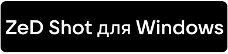
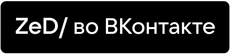

ZeD Shot - Создавайте
скриншоты. Легко. Разработана ZzEdovec.
Загрузите уже сейчас для Microsoft Windows
-

Версия для Linux временно
остановлена в развитии и недоступна для скачивания в связи с трудностями поддержки Ubuntu-подобных дистрибутивов и удаления OpenJFX 8.
